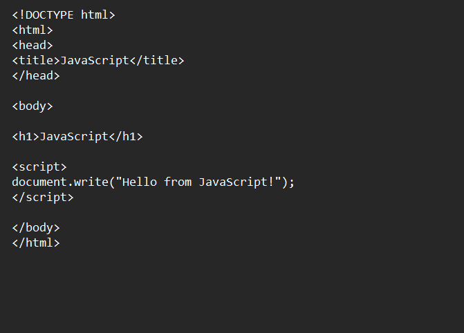

Browser Output and Reflection on Lesson 2
Reflection: In this lesson, I learned that JavaScript code can be placed in different parts of an HTML file depending on how we want it to run. Scripts can be placed in the head section, the body section, or both. Scripts in the head usually load first, while scripts in the body run when the webpage loads. I also learned that JavaScript can be placed in an external file (.js) so it can be reused across multiple webpages. This lesson helped me understand how developers organize JavaScript code to make websites more efficient and easier to manage.
Here is my browser output for this lesson!
